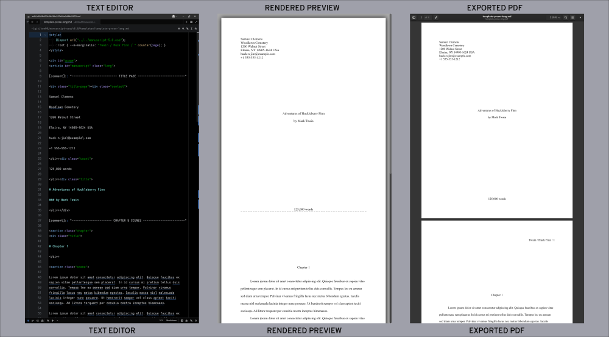

Are you a writer? In particular, a writer of narrative works of fiction, narrative nonfiction, memoir, or poetry? Do prefer the simplicity of drafting your work in a text or markdown editor? Do you wish to share your drafts in a professional manner without having to port your work to a word processor?
Now, you can stay in your favorite text editor and still have a means to present your work in a professional manner for review, critique, or whatever, from working draft to finalized manuscript.
How? You follow a relatively simple format for your document and then, when you are ready to share your words with others, convert it to PDF. Via the power of CSS (Cascading Style Sheet), your seemingly boring text file becomes an industry standard manuscript, a format that agents, publishers, and editors all know and love.

More detail can be found here
manuscript-prose-short.md to
mylastname-mystory.md.mylastname-mystory.pdf..docx format. For that, use
this process until you are absolutely ready to submit to such a publisher and
then port the project to .docx using OnlyOffice or LibreOffice and MS Word (Google Docs is
less flexible, but it works). More information on some of the techniques to do
that are listed later in this document.
NEWS - 2026-04-04 - Manuscript version 5.0 improvements
FIX = fixed, and IMP = improved
FIX: If using the Joplin application as your editor, and you publish your manuscript to the Joplin Cloud, it would not print correctly from that interface. Now it does: NOTE: only chrome can handle the paging and margins correctly upon print.
FIX: Fixed a line-spacing issue with titles (CSS specificity can be finicky)
IMP: Title offsets, while always within spec by default, now match the Shunn standard almost precisely.
IMP: the blind class creates a default template for the margin header that does not include the author's last name. :)
IMP: as always, some cleanup and doc updates.
NEWS - 2025-10-26 - Manuscript version 5.0 released
- Automatically updated under the covers.
- But there are breaking changes!
To use the older version, configure your markdown or html documents to usemanuscript-4.0.cssinstead ofmanuscript.css.- What's new:
- all m-* classes droped the m- from their names:
m-title->title;m-part,m-chapter,m-scene->part,chapter,scene; etc.- class
title-pagewraps title page stuff:contact,count,titleto form a full-height page, and therefore …- title pages are now correctly managed, represented, and predictable.
title-pagestructure has changed and classm-factshas been replaced withcount. Please refer tov5.0/templatesandv5.0/examplesfor a better understanding of the changes.titleoffsets for each<section>are now spaced absolutely correctly.shortstories will never have a page break (even if the author decides to usepartsandchaptersfor whatever reason)poemclass can't be used in 'short' or 'long' narratives, only in 'poetry' documents. For short stories and other narratives, use thex-poemclass instead (used for arbitrary insertion of poems).- simulated page breaks are more sensible and accurate
no-simulationswitch added to turn off page breaksclassicswitch added if you really really want courier as your typeface.
NEWS - 2025-09-12 - Manuscript version 4.0 released
- Automatically updated under the covers.
- But there are breaking changes!
To use the older version, configure your markdown or html documents to usemanuscript-3.0.cssinstead ofmanuscript.css.- What's new:
- poetry manuscripts finally achieve 80% compliance with the shunn.net manuscript spec (It will not, a may never, add a continuance phrase on pages beyond the first page of a poem.)
- id
m-contactis now classm-contactsince we use it more than once within the document.- a major refactor and improvement across the board, much of which has been backported to 3.0
Take a look at the PDFs in the examples folder in this repository. These manuscripts were rendered from their corresponding markdown-formatted draft documents. No fluff and easy to read and review. Here are some screenshots of the results . . .
A manuscript is not a formatted book. It's an industry standard format used to share your work with other humans for review and comment, and to submit to publishers.
To create a book for self-publishing, look into tools like Reedsy, Scribus, Vellum, InDesign, and Atticus.
.docx document.Many/most publishers require your manuscript to formatted as a
Microsoft Word .docx file. (Word 2007 seems to be the most
portable.) Some publishers and agents, especially the better ones, will
accept a .pdf, but most require .docx. There
are ways to automate generating .docx files, but it's not a
piece of cake and never does a good job. Read more about that in structure-summary.md.
Also check out the myriad of authoring platforms out there: Scrivener, Novlr, LivingWriter, Dabble, Ulysses, Storyist (Apple-only, blech!), Final Draft (for screenwriters), Quoll Writer (Windows-only and not sure if Quoll Writer can produce a manuscript), others. This project can do marvelous things with HTML: https://pagedjs.org/. And if you are data-scientist, check out https://bookdown.org/.
Manuscript formatting similar to what many call Shunn Formatting: https://www.shunn.net/format/ (the "modern" formats)
Chrome browser + Markdown Viewer extension
CTRL-P in
the browser (super simple).Pandoc - markdown to HTML command line tool
Note, I have only tested maybe a dozen editors. These ones are particularly painful to use, IMHO.
Command line: copy (clone) the git repository:
git clone https://github.com/taw00/manuscript-css/
cd manuscript-cssVia a browser:
Code (big blue button) >
Download zipmanuscript-css-main.zip file.manuscript-css if you like.cd manuscript-css/pub/ directory so you can import it over the web. (Not a
needed step if using Joplin as your editor.)Check out the example manuscripts in this repository in their original markdown and then as PDFs. Use one of the templates as a template for your own work. And if you are already familiar with converting markdown to HTML and then HTML to PDF then that should be enough to get you going.
(1) Copy and rename one of .md
templates. (2) Edit and replace the text with your
contact information, your story, etc. (3) Preview it
either in-application or in a Chrome browser. Then (4) export to
PDF using either Joplin (the direct way) or a Chrome-based
browser (Firefox cannot do this, unfortunately).
Choose a template to from the manuscript-css/templates/
folder. For your first time, I recommend
template-prose-short.md. Rename it to whatever makes sense
to you like lastname-storytitle.md which is a pretty
standard filename for a manuscript.
Use any editor: Joplin (best experience), VSCodium, Ghostwriter, Zed editor, Vim (experts only), Gnome Text Editor, even Notepad if you like.
lastname-storytitle.md in
our example) in your favorite editor.
Edit, Preview, and then export a PDF, all in the same application interface.
Install Joplin, but then also install the Import Local CSS plugin.
Joplin has a built-in previewer so you can see what the manuscript
will look like. When you are ready to produce a PDF, then press
CTRL-SHIFT-E from within the application.
Notes
Extra Step for A4 and A5 page dimensions
Joplin hijacks the page dimensions. If you want to output A4, for
example, you need to (a) set the A4 class value in your document like
normal (read README-structure-summary.md for
more information), and (b) set it in the Joplin UI: Options
> General > Show Advanced Settings and
then set your preferred page size and orientation there. Just make sure
your document settings and your Joplin settings match.
Or … just export your document to an HTML file, view that with your
browser and CTRL-P.
Edit, Preview, and, if you like, export to an HTML document.
Install VSCodium, but then also
install (CTRL-SHIFT-X) these extensions:
Markdown All-in-One, and optionally
Markdown Preview Mermaid Support,
Markdown Footnotes, and Markdown Superscript.
(The first extension is required.)
VSCodium has a built-in previewer (CTRL-k release then
v) so you can see what the manuscript will look like. To
convert to a PDF document you have to either export it to HTML then
convert that to PDF with a Chrome-based browser or Pandoc, or use the
browser + the Markdown Viewer extension to view the markdown
document and convert that to a PDF document.
To export to HTML on disk: CTRL-SHIFT-P and then
>Markdown All in One: Print current document to HTML. It
will be saved, in the same directory as the markdown document.
Of course, exporting to HTML is optional if your goal is a compliant PDF. If that is the case, then use VSCodium just for editing and previewing and Markdown Viewer + Chrome for creating the PDF.
A BIG CAVEAT WITH VSCODIUM & VSCODE
These editors block importing (@import) from the filesystem. If you want to use the previewer and renderer in VSCodium, you will have to host themanuscript-cssfolder on the web somewhere. Or in the meantime, as of this writing, just use it directly from github:@import "https://taw00.github.io/manuscript-css/manuscript.css";
Side note
With Joplin, you can use its native editor, or any other editor. If you
are Joplin user but also love VSCodium, there is an excellent extension
joplin-vscode-plugin that enables it to plug into the
Joplin application. Other editors are simpler to use with Joplin,
though. I personally use the Zed
editor.
Out of the box, Ghostwriter will not render a correct preview of your work. You just need to adjust a couple settings so you can preview correctly and export to HTML correctly.
Markdown Flavor:
Pandoc CommonMark
CTRL-E
Pandoc CommonMarkHTML 5--metadata title="storytitle" --no-highlight -f markdown-native_divs+raw_htmlOf course, exporting to HTML is optional if your goal is a compliant PDF. If that is the case, then use Ghostwriter just for editing and previewing, and Markdown Viewer + Chrome for creating the PDF from your completed Markdown text file.
Preview, and then when ready, export a PDF from a Markdown-formatted file.
This enables you to use any text editor to work with your manuscript, and then this browser extension to do the conversion.
First, in your Chrome-based browser (Chrome, Vivaldi, Edge, Safari on the desktop, etc.), install the Markdown Viewer extension.
Configure the extension:
Then browse to your markdown file using your Chrome-based browser,
open it, (or use your file browser to browse to it and then open in
Chrome) and it should be rendered nicely as a manuscript-formatted
document. Refresh the view as you edit the document with your text
editor, and then CTRL-P when you are ready to export the
document to PDF.
Most people will not use this option, but I present it here for the geeks …
This requires you use the command line and to have Pandoc installed, https://pandoc.org/.
Convert your markdown-formatted completed manuscript to HTML:
(In this example really only -V and --metadata
are optional.)
pandoc -s -V lang=en --no-highlight -f markdown-native_divs+raw_html \
--metadata title="storytitle" \
-o lastname.storytitle.html lastname.storytitle.md-s means standalone rendering-V lang=en inserts the correct locale info in the HTML
head element. Change en to your locale.--no-highlight means to not do any syntax
highlighting.-f markdown-native_divs+raw_html tells pandoc to trust
our markup and not "autofix" certain things (that then break our
markdown).--metadata title="your title goes here" sets the HTML
title.-o filename.html sets the output filenameThen use the browser to open that HTML document and when ready, export to PDF (`CTRL-P).
That's it! Congrats!
Questions? Comments? Post them in the Discussions section of this
repository.
-todd
Pandoc to .odt to .docx - NOT RECOMMENDED
In theory, you could use Pandoc to generate a functional, but messy
LibreOffice .odt document and then edit it until it is
properly formatted. But … that document will be MESSY. I do not
recommend, but here is how you do that.
pandoc -o your-manuscript.odt your-manuscript.mdWord (.docx) Templates
(Note, DO NOT USE WORD 365 ONLINE! It cannot manage saved styles correctly.)
I have included MS Word-compatible templates in this repository
(templates/word-templates). Copy the appropriate template into a working
folder, rename it to your story, and copy-and-paste from your generated PDF
into that .docx file, working to retain the proper formatting. It
works and it goes faster than it sounds.
As you work with one of those templates, notice the custom styling used for each manuscript-specific element within the document. If you are not familiar with managing your document using styles, now is the time to learn.
<--Google Docs
Check out my Google Docs templates here.
You can get your document into Google Docs one of two ways: 1. port it to OnlyOffice or LibreOffice, generate a .docx and then import that into Google Docs. Or 2. you could create a new clean document from one of those templates and do the cut-and-paste shuffle as described earlier.
-->OnlyOffice seems to generate more
true to MS Word .docx formatting. Then LibreOffice. Then Google Docs.
0-draft: handwritten, with pen-and-ink, in a composition notebook
work-in-progress: transcribed to the Joplin desktop application interface (markdown)
review by other: I periodic share drafts or portion of a drafts with friends, family, and critique partners. For this, I also use Joplin's excellent Joplin Cloud service which has a really convenient publish-to-the-web feature. But I will also have just print my work in progress (in manuscript form of course) and hand people a hardcopy to review.
finalize the document: If they accept a PDF, I
just generate a PDF directly from Joplin and submit that. If they
require a .docx, I port my markdown to PDF then to over to
OnlyOffice. It doesn't take that long.
verify the format and submit: If the publisher
requires .docx, I find a friend with MS Word, or I head to
the local library, and verify that the formatting translated correctly.
Fix any errors (LibreOffice seems to struggle with maintaining the
margins, for example) and then submit.
—WARNING: Do not use
MS Word 365 online. It boggles the mind that Microsoft has yet
to get this right, but that version of Word WILL NOT retain your style
settings and will very likely ruin your manuscript. I suspect they will
fix this soonish, but it has been a problem for some time now.
Brace myself for the rejection. ;)
Nope. It's just the best application that I have found for this kind of work.
The great majority of markdown editors are great at editing text. Some can also preview your work (most cannot). Joplin is, I think, the only text editor with full CSS rendering capability and that can also export to HTML or PDF natively.
The Joplin note-taking application (like Obsidian but much better) gives you the full ability to customize the results of whatever you write to your hearts content using standard CSS. Joplin is also a great personal document-management platform (like Evernote, but better). And it can sync to the cloud. And you can publish things to the cloud for anyone to view. And it is fully end-to-end encrypted. And it has a web-clipper (super handy!!!) and a mobile app. And, and! So, yes, I suppose I am a Joplin shill. But for all the right reasons.
But I also use other editors out there—primarily Zed, Ghostwriter, and Vim. I am sure you have your preferred interface. To work with any other edit, just install Chrome and the Markdown Viewer extension and follow the steps above. It's not complicated.
Check out the manuscript templates and examples in this repository and I think how
everything works with manuscript.css becomes obvious.
Good luck. Now, quit fooling around on the internet and write something.
Copyright (c) Todd Warner <t0dd [at] protonmail [dot]
com>
This work is licensed under Attribution 4.0 International. To view a
copy of this license, visit http://creativecommons.org/licenses/by/4.0/.
Several people have asked how they could thank me for work that I have done that they found valueable. Well, one easy way to thank me is to "buy me a cup of coffee": https://buymeacoff.ee/toddwarner Or just send me an email (see above) and express your appreciation. Or star this on Github. Or whatever.
Cheers!
{kind=link}